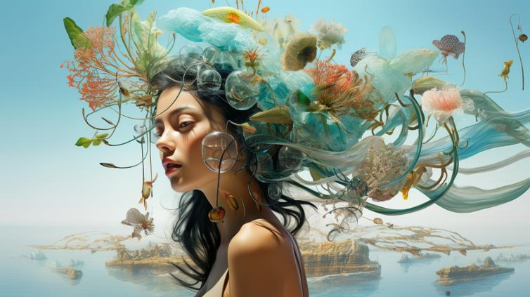
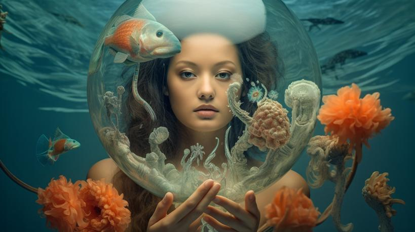
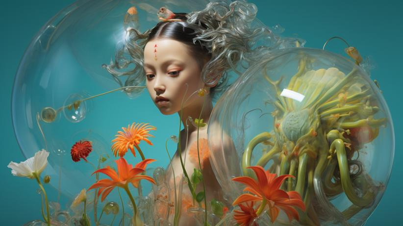

Exhibited at Art Basel Miami Beach 2024, this series explores the threshold between the organic and the imagined — where a woman becomes the landscape, and the landscape becomes her.
Each piece draws on the subconscious language of nature: coral, flowers, water, glass, and light rendered in a dreamlike space that exists nowhere and everywhere at once. The figures are not separate from their environments — they are part of the same continuous living system.
The work sits at the intersection of architecture, ecology, and the feminine — rooted in the same thinking that drives Izabela's design practice: that the most powerful spaces are those that feel genuinely alive.
Order a PrintII — The Bloom Crown

III — Island Mind

IV — Glass Sphere

V — Still Waters
Limited Edition Prints
Each print is produced on museum-quality fine art paper and available in three sizes. Signed and numbered.
Shop Prints